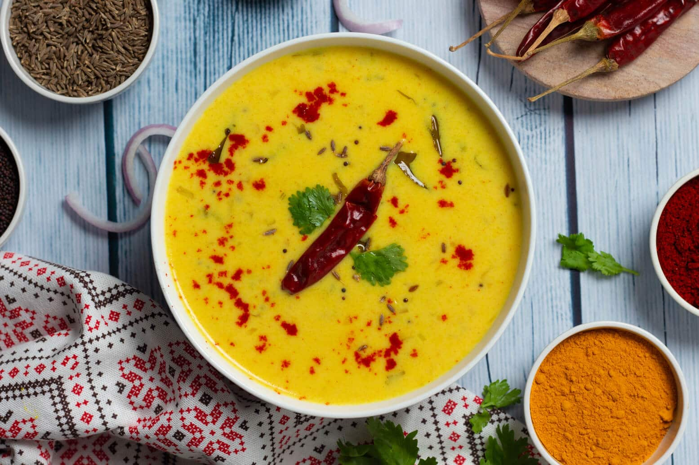

Kadhi or karhi is a dish originating from the Rajasthan.[1] It consists of a thick gravy based on gram flour, and contains vegetable fritters called pakoras, to which dahi (yogurt) is added to give it a bit of sour taste. It is often eaten with cooked rice or roti.
Ingedients
- 1½ cup curd
- ¼ cup besan / gram flour
- ½ tsp chilli powder
- ½ tsp turmeric
- ▢1 tsp salt
- 4 cup water
- 2 tbsp ghee
- 1 tsp mustard
- 1 tsp cumin
- ½ tsp fennel
- ¼ tsp methi
- 1 bay leaf
- 4 cloves
▢
- 2 pods cardamom
- few curry leaves
- pinch hing
- 2 chilli
- 1 inch ginger
Steps
- Firstly, in a large bowl take 1½ cup curd, ¼ cup besan, ½ tsp chilli powder, ½ tsp turmeric and 1 tsp salt.
- Whisk and mix well making sure there are no lumps.
- Wow add 4 cup water and mix well. keep aside.
- In a large kadai heat 2 tbsp ghee. add 1 tsp mustard, 1 tsp cumin, ½ tsp fennel, ¼ tsp methi, 1 bay leaf, 4 cloves, 2 pods cardamom, few curry leaves and pinch hing.
- Also add 2 chilli, 1 inch ginger and saute well.
- Now pour in the prepared besan curd mixture and mix well.
- Keep stirring until the mixture comes to a boil. the kadhi starts to thicken.
- Boil for 30 minutes or until the flavours are well absorbed.
- To prepare the tempering heat 1 tbsp ghee. add ½ tsp mustard, ½ tsp cumin, 2 dried red chilli, ¼ tsp chilli powder and mix well without burning.
- Pour the tempering over the kadhi. also, add 2 tbsp coriander and mix well.
- Finally, enjoy Rajasthani Kadhi with jeera rice.